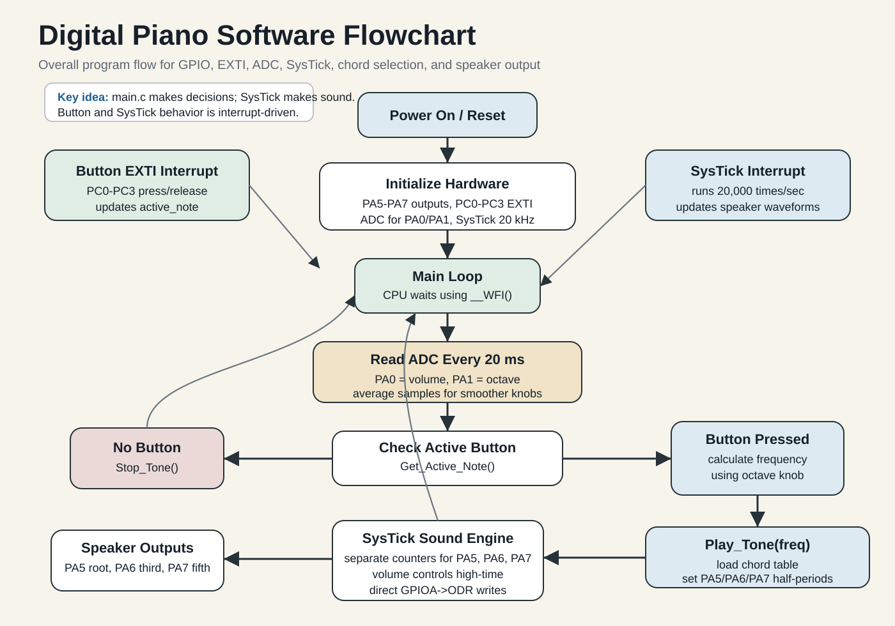
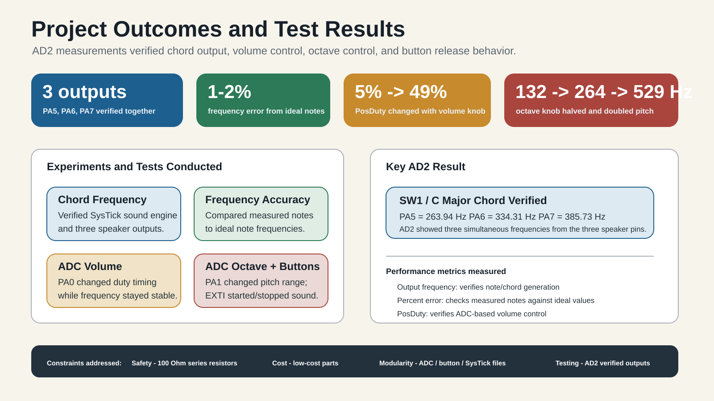

ENGR 478 Term Project
Four-button digital piano using the STM32 NUCLEO-L476RG
This project uses GPIO, EXTI interrupts, SysTick, and ADC to make a small embedded piano. Four push buttons select chords, three speaker outputs play the sound, and two potentiometers control volume and octave.
Hardware Setup
Inputs and outputs used by the piano
Push Buttons
PC0, PC1, PC2, and PC3 are configured as inputs with pull-up resistors. Pressing a button creates an EXTI interrupt.
Speaker Outputs
PA5, PA6, and PA7 are GPIO outputs. The SysTick handler changes these pins to create the sound waveform.
Volume Knob
PA0 is an ADC input connected to a 10 kOhm potentiometer. It controls the duty time of the sound output.
Octave Knob
PA1 is an ADC input connected to a 10 kOhm potentiometer. It moves the selected note lower or higher.
| Pin | Direction | Project Use |
|---|---|---|
| PA5 | Output | Speaker output 1 |
| PA6 | Output | Speaker output 2 |
| PA7 | Output | Speaker output 3 |
| PC0-PC3 | Input | Push buttons through EXTI |
| PA0 | Analog input | Volume potentiometer |
| PA1 | Analog input | Octave potentiometer |
Software Flow
How the code runs
The program initializes GPIO, SysTick, EXTI, and ADC. After setup, the main loop sleeps
with __WFI() and wakes when an interrupt happens. Button interrupts select
the active note. The main loop reads the two ADC knobs every 20 ms. SysTick creates the
sound timing at 20 kHz.
- EXTI handles button press and release.
- ADC reads volume and octave.
- SysTick creates the speaker waveform.
- The main loop connects the modules together.

Chord Table
Each button selects a three-note chord
C Major
C - E - G
G Major
G - B - D
A Minor
A - C - E
F Major
F - A - C

Testing
Measured with Analog Discovery 2
The project was tested by checking the speaker output pins, button press and release behavior, ADC volume control, and ADC octave control. The measured values showed that the expected notes were close to the target musical frequencies.
Code Structure
Multi-file C project
main.c
Initializes the project, reads ADC updates, checks the active button, and calls the sound functions.
button.c
Configures PC0-PC3 as EXTI inputs and handles software debounce for button changes.
Systick_timer.c
Runs the sound engine, applies the chord table, controls volume, and updates milliseconds.
ADC.c
Reads PA0 and PA1, averages ADC samples, and converts knob values into volume and octave settings.